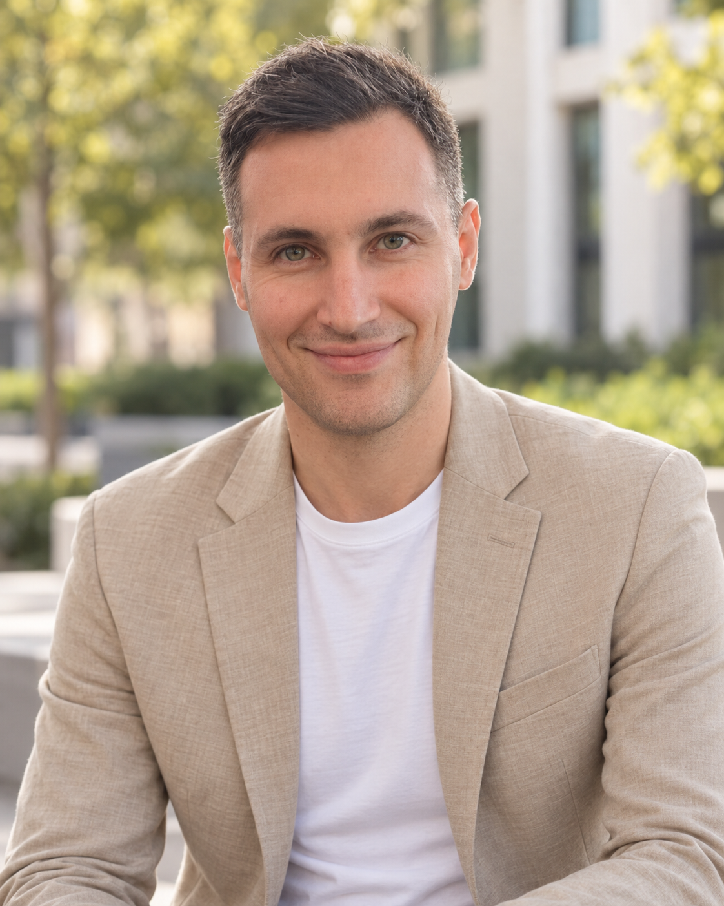

Graph Machine Learning · ARMEDIA Team · Télécom SudParis
Aref Einizade
Assistant Professor (Maître de Conférences)
ARMEDIA Team — SAMOVAR Laboratory
Télécom SudParis
Institut Polytechnique de Paris

Profile
About
I am an Assistant Professor in Graph (and Topological) Machine Learning and Signal Processing at ARMEDIA Team, Télécom SudParis, Institut Polytechnique de Paris. My research lies at the intersection of Graph and Topology (in Machine Learning, Signal Processing, and Neural Networks), with an emphasis on theoretically grounded methods and spanning their applications especially in Biomedical (Brain) data analysis and spatiotemporal forecasting.
Before joining Télécom SudParis in 2026, I was a postdoctoral researcher in the Multimedia team (under the supervision of Dr. Jhony H. Giraldo and Prof. Fragkiskos D. Malliaros) at Télécom Paris from November 2023 to January 2026. I received my PhD in Electrical Engineering from Sharif University of Technology (under the supervision of Dr. Sepideh Hajipour Sardouie) on February 2023, where I developed graph-based methods for learning unknown structures in biomedical signals.
Career
Academic path from signal processing to flexible graph machine learning.
Research
Research directions
A flexible graph-learning program spanning theory, algorithms, and biomedical/spatiotemporal applications.
People
Team
Current members
Former visiting researchers
Alumni
Journal, conference, and preprint publications by Aref Einizade and collaborators.
Teaching & mentoring
Teaching
Updates
News
Get in touch
Contact
For research collaborations, student supervision, and academic inquiries, please use the institutional email address.
Télécom SudParis · Institut Polytechnique de Paris
SAMOVAR · ARMEDIA
9 rue Charles Fourier, 91011 Évry, France